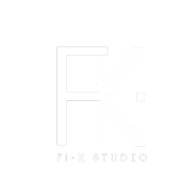
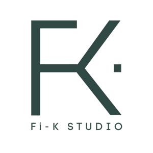

Hidup atau matikan setiap lapisan untuk bandingkan. "Banding warna" papar garis: kiri video asal, kanan selepas colour grade. Seret bulatan putih untuk gerakkan garis.
| Masa (versi 1) | Apa aku buat |
|---|---|
| 0:00 – 0:01 | Buang bahagian kau belum pandang kamera. Video terus mula dengan "Ramai…". Kalau potong penuh sampai 0:01, perkataan "Ramai" akan terpotong, jadi aku potong sampai 0:00.7, iaitu betul-betul sebelum "Ramai". Dari frame pertama kau dah pandang kamera. |
| 0:11.5 | Buang sisa take lama sebelum "Masalahnya". Sekarang terus masuk "Masalahnya, dapur dekat gambar Pinterest…". |
| 0:28.1 – 0:29.3 | Buang pause janggal antara "rumah korang" dan "masalah ni akan dapat kita detect". |
| 0:34.4 – 0:35.4 | Buang pause selepas "dekat dinding". Terus "Ubah 3D tak susah, tak mahal". |
| 0:37.8 – 0:38.2 | Buang pause antara "tak mahal" dan "Nak ubah time renovation". |
Semua B-roll, grafik, bunyi dan zoom aku alihkan ikut masa baru, supaya masih jatuh pada perkataan yang sama. Durasi baru 0:44.
Tekan mana-mana baris untuk lompat ke saat tu dalam preview.
Ayat pembuka kau memang dah hook yang kuat. Kau rakam dua kali, dan aku pilih take kedua sebab ada angka: "berbelas ribu". Angka buat kerugian rasa nyata. Atas skrin, aku letak tajuk "RUGI BERIBU SEBAB 1 GAMBAR dari Pinterest" dan cop merah −RM10,000+.
Ramai hampir rugi berbelas ribu sebabkan satu gambar dekat Pinterest.
Gabungan duit + benda yang semua orang buat (save gambar Pinterest). Orang yang tengah rancang reno akan berhenti scroll.
Dapur dekat gambar Pinterest tu 15 kaki. Tapi rumah korang tu 9 kaki je.
Lebih spesifik dan visual, sesuai kalau sasaran khusus orang yang nak buat dapur. (0:39 dalam video asal)
Nak ubah time renovation, beribu hilang.
Pendek dan menakutkan, tapi kurang konteks untuk saat pertama. (1:36)
Masa ikut video baru, dan setiap baris tunjuk saat asal. Perkataan bertanda kuning ialah pembetulan caption (AI dengar "Pita ais", sepatutnya "Peti ais").
Saat pertama sebelum kau pandang kamera, take pertama hook (tanpa "berbelas ribu"), take pertama "Situasi yang biasa kita jumpa", take "Masalahnya" yang terputus, dua take "Peti ais tak muat…", take "Bila kami lukis ikut 3D yang…", take "Ubah 3D ni tak…" yang tak habis, satu "Nak ubah" yang terulang, dan semua pause panjang (termasuk 4 pause yang kau tanda dalam versi 1). Pause dalam ayat yang lebih daripada 0.3 saat aku pendekkan.
Tekan Banding warna bawah video. Rakaman asal kena lampu kuning (tungsten), jadi semua nampak oren, sampai baju biru kau nampak pink. Arah grade: bersih, hangat dan mahal, macam studio interior.
| Langkah | Apa aku buat | Hasil (diukur) |
|---|---|---|
| Imbangan putih | Kurangkan merah 13%, tambah biru 11%. | Baju dari pink (185/157/151) kembali biru muda (167/158/165). Dinding jadi beige hangat, bukan oren. |
| Kontras | Lengkung S lembut, hitam lebih dalam. | Rak buku dan kerusi hitam nampak lebih kaya. |
| Lampu muka | Key light lembut di kawasan muka sahaja. | Muka kekal natural. Kawasan "terbakar" maksimum 0.05%, sama atau lebih rendah daripada asal. |
| Kemasan | Vignette halus, sharpen ringan (video asal 720p). | Fokus ke muka, nampak lebih tajam di telefon. |
| B-roll | Lengkung yang sama, saturasi sedikit turun, push-in perlahan 7%. | Semua klip nampak satu "look". |
| Suara | Buang dengung bawah 80 Hz, kurangkan bunyi bilik, compressor, −14 LUFS. | Standard TikTok/Reels. |
| Muzik | Lo-fi santai pada −30 LUFS, turun automatik bila kau bercakap. | Rasa moden tanpa kacau suara. Boleh dimatikan dalam preview. |
Rakaman skrin Pinterest yang sebenar tak sesuai untuk iklan. Setiap gambar (pin) di situ milik orang lain, dan garis panduan jenama Pinterest tak benarkan UI atau logo mereka digunakan dalam iklan tanpa kebenaran. Jadi aku buat dua benda:
7 klip video sebenar (bukan AI) dari Mixkit, bawah Mixkit Stock Video Free License: percuma, boleh untuk iklan, tak perlu kredit. Sila baca lesen di mixkit.co/license sekali sebelum iklan berbayar. Dapur "9 kaki" pula ialah foto projek Fi-K sendiri (folder CFik017, dapur basah sebelum reno). Ini paling kuat sebab real. Pastikan klien setuju gambar rumah dia digunakan.

Logo GreenVideo ni gelap dan hangat (rak buku, kerusi hitam), jadi logo hijau gelap akan tenggelam. Logo putih jelas sebagai watermark kecil di atas kanan, dan sangat cantik atas latar hijau jenama di end card. Logo hijau sesuai untuk latar cerah (contoh thumbnail putih).
Lepas kau setuju, aku render final 1080×1920 dengan semua kesan dibakar ke dalam video.